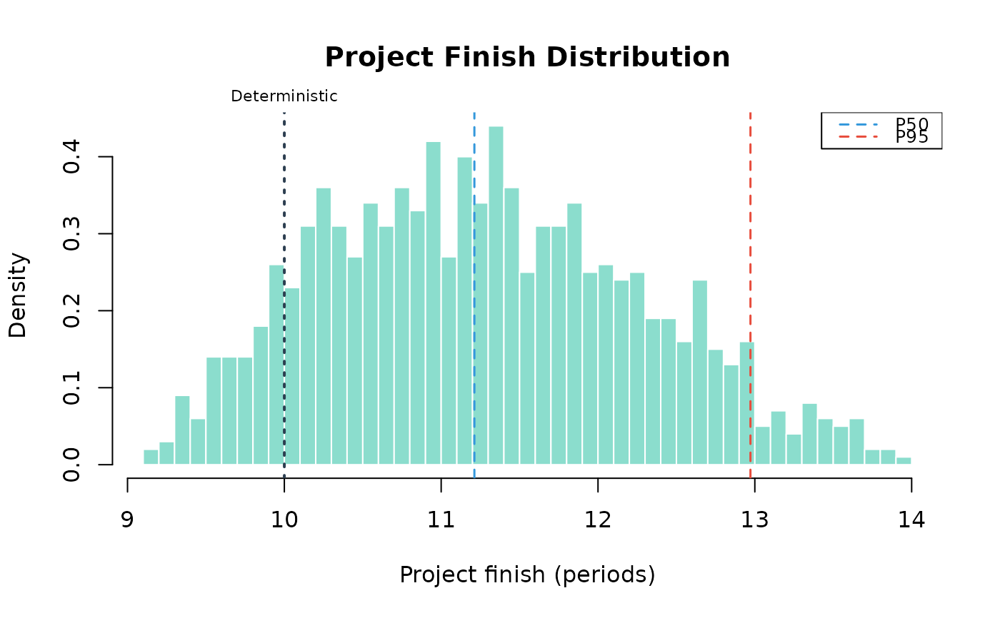
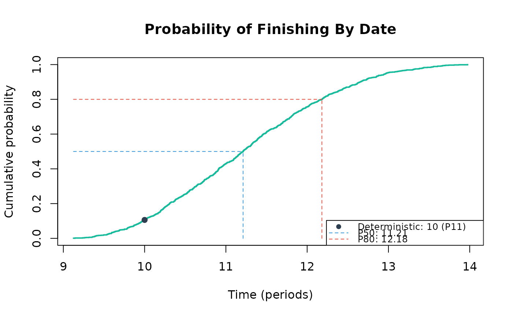
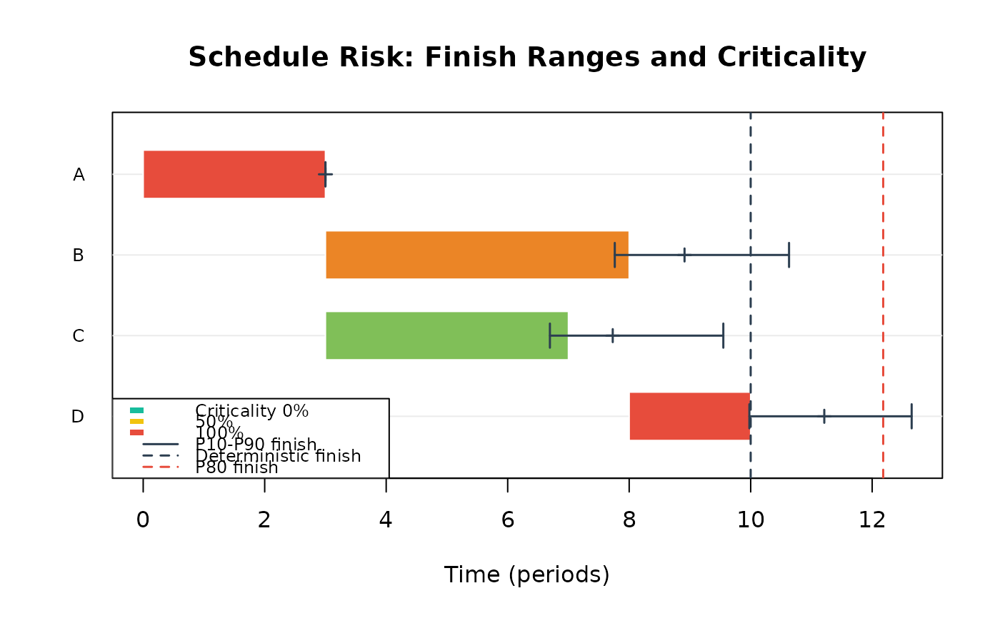
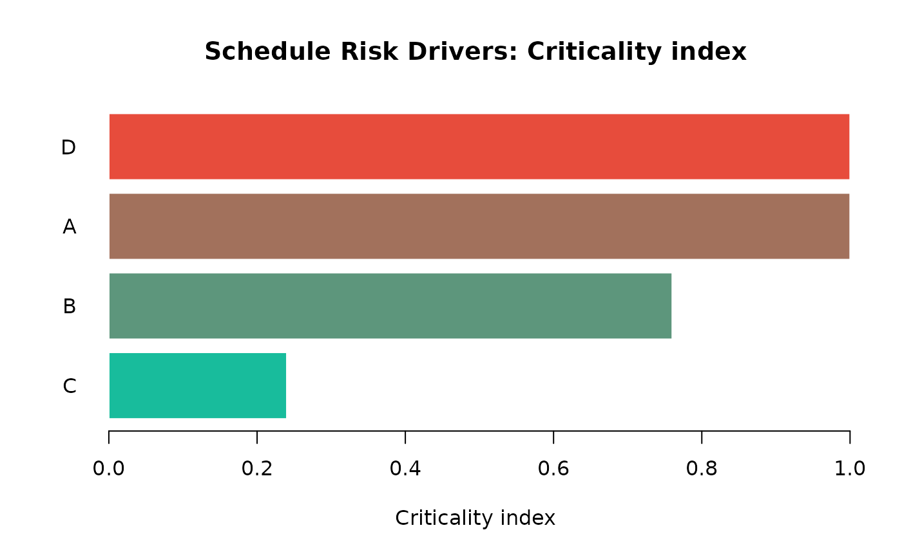
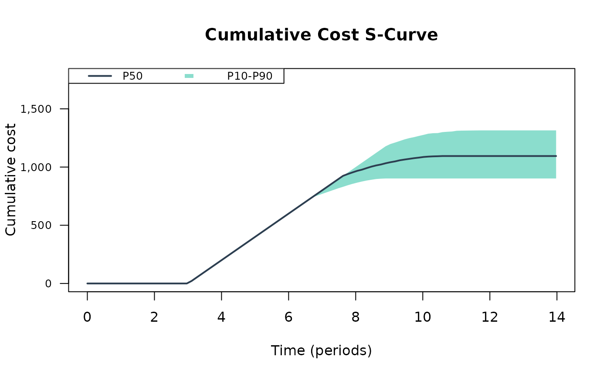
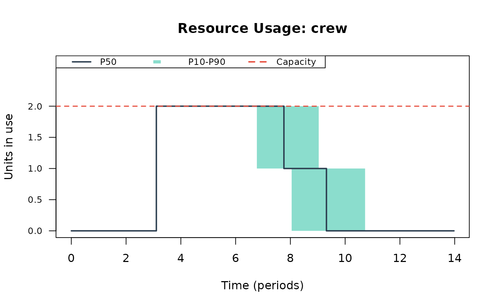
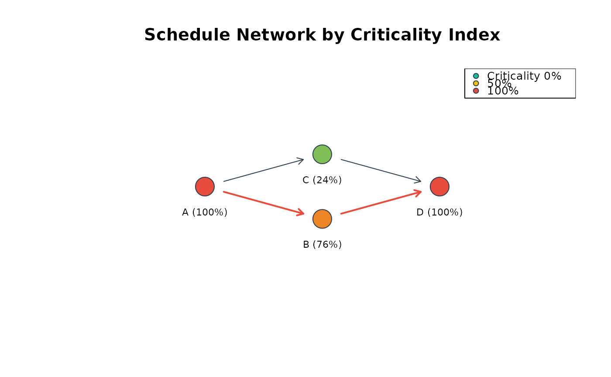

One method, seven views of a schedule risk analysis:
"finish"Histogram of the project finish with P50 and P95 markers and the deterministic finish.
"cdf"Cumulative probability (S-curve) of the project finish, annotated with the deterministic finish and its probability, P50 and P80.
"gantt"Deterministic Gantt bars colored by criticality index, with P10-P90 finish whiskers and a P50 finish tick for each activity.
"tornado"Ranked bar chart of the measure chosen by
metric."cost"Cumulative cost S-curve: P50 line and P10-P90 band over time.
"resources"Usage of each resource over time (P50 line and P10-P90 band) against its capacity.
"network"Activity-on-node network with nodes colored by criticality index.
Arguments
- x
An object of class
"sra".- type
The view to draw; see Description.
- metric
For
type = "tornado":"cruciality"(default),"criticality","ssi","sensitivity", or"risk"for the finish impact of each risk event.- resource
For
type = "resources": resource ids to draw. Defaults to all resources, one panel each.- top
For
type = "tornado": the maximum number of bars. Default 15.- main
Optional plot title.
- ...
Additional arguments passed to the underlying plotting function.
Examples
proj <- project_schedule(
data.frame(id = c("A", "B", "C", "D"), duration = c(3, 5, 4, 2)),
data.frame(source = c("A", "A", "B", "C"), target = c("B", "C", "D", "D")),
duration_dists = list(
B = list(type = "triangular", a = 4, b = 5, c = 9),
C = list(type = "triangular", a = 3, b = 4, c = 8)
),
resources = data.frame(id = "crew", capacity = 2, rate = 100),
assignments = data.frame(activity = c("B", "C"), resource = "crew", units = 1)
)
res <- sra(proj, num_sims = 1000)
plot(res)

plot(res, type = "cdf")

plot(res, type = "gantt")

plot(res, type = "tornado", metric = "criticality")

plot(res, type = "cost")

plot(res, type = "resources")

plot(res, type = "network")
